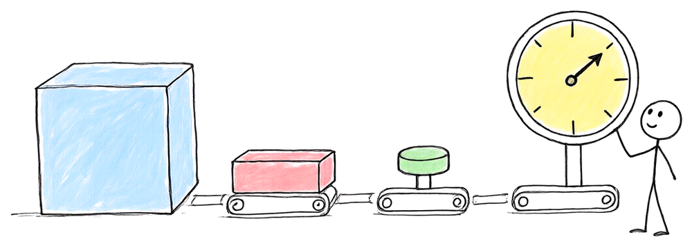
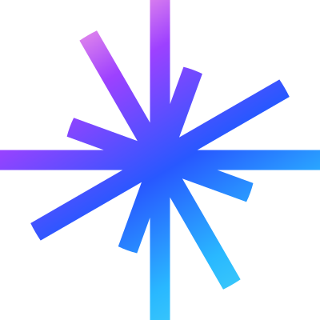
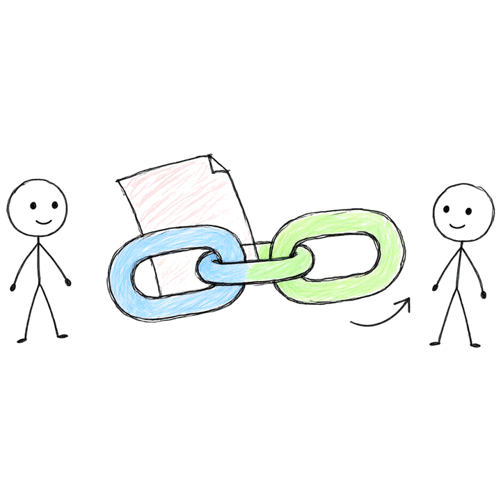

The model: Apertus-ParlTopics-8B

Apertus 1.5 8B is the Swiss open model by ETH Zurich, EPFL and CSCS. The base weights are unchanged. On top sit a LoRA adapter of rank 16 (159 MB) and a small yes/no head (8 MB).
It was trained as a decision model with Kev, which is open under Apache-2.0. Training data: 6,728 federal affairs from before 2024 with 31,837 yes/no questions from Curia Vista labels. One epoch took 1.8 hours on one RTX A6000.
The model was never trained on APS, on digitalisation or on any cantonal or city scheme. Those sets test whether a topic transfers to a scheme the model has not seen. The model is open on Hugging Face at merabro/Apertus-ParlTopics-8B.
Architecture of the public version

Zilliz Cloud 323,441 vectors level, year, topicsRead-only
no new scoring
The Worker serves the static search page and a read-only API under /api with rate limits.
Query encoder: one small container running harrier-oss-v1-0.6b on CPU, 1 vCPU and 3 GiB, turns the search text into 1,024 numbers and sleeps after 10 idle minutes.
D1 is Cloudflare's SQLite: affairs, text excerpts, English titles and the yes topic decisions. Zilliz Cloud holds the 323,441 search vectors with level, parliament, year and topics as filter fields.
Links and contact
Team Invincibles
Scan to open the live site

Calculations were performed on UBELIX (https://www.id.unibe.ch/hpc), the HPC cluster at the University of Bern.
Live: https://parlamentsthemen.prakasharyan.dev. Code: https://github.com/prakash-aryan/parlamentsthemen. Model: https://huggingface.co/merabro/Apertus-ParlTopics-8B. Data: https://openparldata.ch. Team Invincibles: Kaushik Raghupathruni, Vilas Harapanahalli, Vaibhav Motwani (presenting) and Prakash Aryan.
Credit: calculations were performed on UBELIX (https://www.id.unibe.ch/hpc), the HPC cluster at the University of Bern.